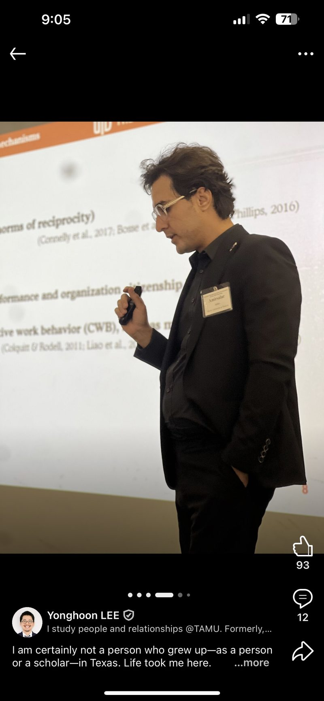

Teaching as a dual commitment
The classroom should be a place where students don't just absorb facts, but grow as whole people.
I expect my students to nurture their intellectual curiosity, and I also hope to foster the socio-emotional maturity they need to become well-rounded adults. Success, for me, is not just mastery of a syllabus. It is a lifelong curiosity and the resilience to apply what they know to the world around them.

An invitation to dialogue
Rather than simply delivering material, I coordinate class agendas so the room is inclusive and supportive and every voice is valued. My delivery invites dialogue rather than passive listening. With multimedia materials and interactive activities, I try to show students what it means to be an expert who is still an active learner.
By bringing multiple perspectives into our discussions, I challenge students to think critically and see themselves as part of an evolving scholarly conversation. I design in-class group activities, and I wrote a four-page case published in the 2026 edition of Global Business.
"The in-class activities were great, especially those that involved group work."
Below is a recent in-class activity I designed on cultural differences in international business.
Open the PDF if it does not load above.
Practice in the classroom
To close the gap between theory and my students' daily lives, I bring industry guest speakers into the classroom. I handle the logistics myself: cold-calling guests, connecting on LinkedIn, and preparing their questions ahead of each visit, all out of pocket. Some of the organizations that have visited my class:
- Foreign National Trade Council
- Circle
- BRAIN
- Texco Technology
- Reshoring Initiative
- Global Steel Climate Council
- Streevo
- Y2 AI
"Bringing guest speakers to talk about relevant subjects that we were learning that week of class solidified my understanding of the subject."
Using AI to teach
Two AI agents collect and send me summaries of papers from my favorite journals, along with reports, news, and non-academic articles relevant to what I teach, so I always have fresh examples. I also use AI to design scenario-based group activities, and to create audio summaries, video summaries, and infographics so students have modern ways to review material. Students have cited these as some of the most engaging parts of the class.
A reflective practice
My primary goal is for students to feel supported enough to take intellectual risks, in a collaborative community where we celebrate different experiences and build camaraderie. I treat feedback, formal and informal, as a dialogue that shapes how I adjust to students' needs.
"It's clear our professor is highly educated and definitely qualified to teach the subject matter."
Courses
International Business, University of Texas at Dallas
Human Resource Management, International Business, Strategic Management, and Entrepreneurship, University of Texas at Dallas. Research and teaching assistant, American University.